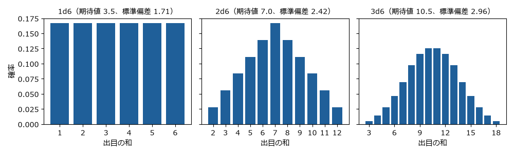
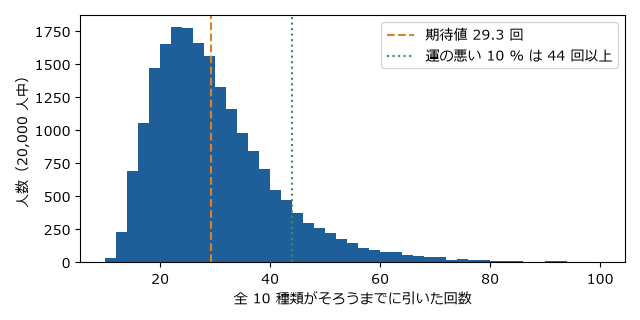
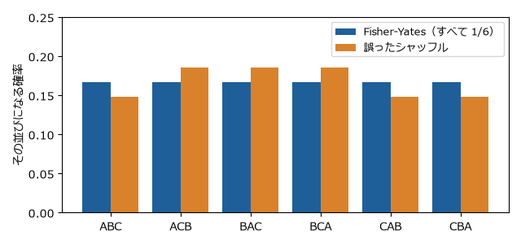

5 章 数理
ゲームはルールで定められた仕組みなので、数学で扱える部分が多い。この章では、8 章の演習で使う数理の道具を説明する。それぞれの節には、計算を確かめる Python のサンプルを用意した。
状態とゲーム木
ゲームのある時点の状況をすべて書き表したものを状態（局面）と呼ぶ。三目並べなら、9 マスのそれぞれに ×、○、空白のどれがあるかで状態が決まる（プログラムでは × を X、○ を O で表す）。プレイヤーが手を打つと、状態は別の状態に移る。
初期の状態から、打てる手を枝として順に広げていくと、木の形の図ができる。これをゲーム木と呼ぶ。木の末端（葉）は、勝ち負けが決まった終局の状態である。
三目並べのゲーム木の大きさを、tictactoe.py で数えてみる。
1> py tictactoe.py
2終局までの手順の数: 255168
3到達できる局面の数: 5478
4初期局面の値: 0（0 は双方が最善を尽くすと引き分け）
9 マスに順に打つ手順は最大で \(9! = 362880\) 通りだが、途中で勝負がつくと手順はそこで終わるので、実際の手順は 255,168 通りになる。また、異なる手順で同じ局面に到達することが多いので、局面の数は 5,478 にまで減る。
三目並べは計算機ですべて調べ尽くせる大きさだが、チェスのゲーム木の大きさは \(10^{120}\) 程度と見積もられており（シャノン数）、すべてを調べることはできない。
完全情報ゲームを解く
完全情報で偶然の要素の無いゲームは、ゲーム木の葉から逆にたどることで、双方が最善を尽くしたときの結果を求められる。この方法をミニマックス法と呼ぶ。
先手（×）の勝ちを +1、引き分けを 0、後手（○）の勝ちを -1 とする。先手は値が最大になる手を、後手は値が最小になる手を選ぶと考え、葉から順に値を決めていく。
![digraph minimax {
node [shape=box, style="rounded,filled", fontsize=11];
edge [color="#555555"];
a [label="先手の手番\n値 = max(3, 2) = 3", fillcolor="#e8f0f8", color="#1f5f99"];
b [label="後手の手番\n値 = min(3, 5) = 3", fillcolor="#fbeee2", color="#d9822b"];
c [label="後手の手番\n値 = min(2, 9) = 2", fillcolor="#fbeee2", color="#d9822b"];
l1 [label="3", shape=ellipse, fillcolor="#f2f2f2"];
l2 [label="5", shape=ellipse, fillcolor="#f2f2f2"];
l3 [label="2", shape=ellipse, fillcolor="#f2f2f2"];
l4 [label="9", shape=ellipse, fillcolor="#f2f2f2"];
a -> b [label=" 手 A", fontsize=10, penwidth=2.5, color="#1f5f99"];
a -> c [label=" 手 B", fontsize=10];
b -> l1 [penwidth=2.5, color="#d9822b"];
b -> l2;
c -> l3 [penwidth=2.5, color="#d9822b"];
c -> l4;
}](../_images/graphviz-e01de5988ece8b745ceeedc3e3d47d137679a1d8.png)
図 4 ミニマックス法の考え方。先手は子の最大値を、後手は子の最小値を選ぶ
上の図では、手 B の先には 9 という大きな値があるが、後手はそれを選ばず 2 を選ぶ。そのため先手は、確実に 3 が得られる手 A を選ぶ。
tictactoe.py の value 関数は、この方法で三目並べの初期局面の値を求め、0（引き分け）を得る。つまり、三目並べは双方が最善を尽くすと必ず引き分けになる。py tictactoe.py play で、この方法で手を選ぶ AI と対戦できる。
このように、最善を尽くしたときの結果が分かったゲームを「解かれたゲーム」と呼ぶ。チェッカー（8×8 の盤で駒を斜めに進め、相手の駒を跳び越して取る西洋のゲーム。ドラフツとも呼ぶ）は 2007 年に、双方が最善を尽くすと引き分けになることが証明された。オセロは 2023 年に、同じく引き分けになるという計算結果が発表された。ゲーム木が大きくなると、同じ局面をまとめる工夫や、明らかに悪い枝を調べずに済ませる工夫（枝刈り）が必要になる。
組合せゲーム理論
ニムは、いくつかの石の山から、2 人が交互に、1 つの山から 1 個以上の石を取るゲームである。最後の石を取った方が勝ちとする。
ニムには、二進数を使ったきれいな必勝法がある（チャールズ・ブートン、1901）。すべての山の石の数の排他的論理和（XOR）をニム和と呼ぶ。
ここで \(h_i\) は \(i\) 番目の山の石の数、\(\oplus\) は排他的論理和である。
ニム和が 0 でない局面で手番が来たら、ニム和を 0 にする手が必ずある。
ニム和が 0 の局面で手番が来たら、どう打ってもニム和は 0 でなくなる。
石が無くなった局面のニム和は 0 である。
したがって、自分の手番でニム和が 0 でなければ、常にニム和を 0 にして相手に渡し続けることで必ず勝てる。たとえば山が 3、4、5 個のとき、二進数で 011、100、101 なので、ニム和は 010（= 2）である。3 個の山から 2 個取って 1、4、5 にすると、001、100、101 でニム和は 0 になる。
nim.py の winning_move 関数がこの手を求める。
21def winning_move(heaps: list[int]) -> tuple[int, int] | None:
22 """ニム和を 0 にする手（山の番号, 取る個数）を返す。無ければ None を返す。"""
23 s = nim_sum(heaps)
24 if s == 0:
25 return None
26 for i, h in enumerate(heaps):
27 target = h ^ s
28 if target < h:
29 return i, h - target
30 return None # s != 0 なら必ず上で見つかるので、ここには来ない
山の石の数 h とニム和 s の排他的論理和 h ^ s を目標の数とし、それが h より小さければ、その山から h - target 個取ればよい。
同時に手を選ぶゲーム
じゃんけんのように、双方が同時に手を選ぶゲームは、ゲーム木ではなく利得表で表す。利得表は、両者の手の組合せごとに、それぞれが得る点（利得）を並べた表である。
代表的な例が囚人のジレンマである。2 人がそれぞれ「協力」と「裏切り」を選び、利得は次のとおりとする（括弧の中は、左が A、右が B の利得）。
A ＼ B |
協力 |
裏切り |
|---|---|---|
協力 |
(3, 3) |
(0, 5) |
裏切り |
(5, 0) |
(1, 1) |
B がどちらを選んでも、A は裏切った方が利得が大きい（3 より 5、0 より 1）。B から見ても同じなので、2 人とも裏切り (1, 1) に落ち着く。どちらも自分だけ手を変えても得をしない組合せをナッシュ均衡と呼ぶ（ジョン・ナッシュ、1950）。2 人とも協力すれば (3, 3) が得られるのに、それぞれが合理的に選ぶと (1, 1) になる点が「ジレンマ」である。
じゃんけんには、このような 1 つの手に決まる均衡が無い。グーに決めればパーで負かされ、パーに決めればチョキで負かされる。均衡は、3 つの手を確率 1/3 ずつでランダムに出す混合戦略である。どの手にも偏らなければ、相手に読まれることが無い。
勝ったときの点が手によって違うと、均衡も変わる。「グリコ」という遊び（グーで勝つと 3 歩、チョキとパーで勝つと 6 歩進む）を、相手との差を競うゼロ和ゲームと見て、rps.py で計算する。
1> py rps.py
2勝ったときの得点: グー 3、パー 6、チョキ 6
3最適な割合: グー 0.400、パー 0.200、チョキ 0.400
4最適な割合の相手に対する各手の期待値: グー +0.000、パー +0.000、チョキ +0.000
5均等に出す相手に対する各手の期待値: グー -1.000、パー +0.000、チョキ +1.000
6均等に出す相手に毎回チョキを出したときの平均得点（シミュレーション）: +1.004
同じ 6 歩でも、チョキの割合は 0.4 なのに、パーの割合だけが 0.2 と小さくなる。パーが負かすグーは、勝っても 3 歩しか進めない手なので、それを止める価値が小さいからである。直感に反するこの結果は、8 章の演習 5 で詳しく調べる。
確率と期待値
偶然の要素を持つゲームを理解するには、確率と期待値が基本になる。ある量 \(X\) が値 \(x_i\) を確率 \(p_i\) でとるとき、期待値 \(E[X]\) と分散 \(V[X]\) は次の式で表される。
6 面のサイコロ 1 個を 1d6、2 個の和を 2d6 のように書く。dice.py で 1d6、2d6、3d6 の分布を計算すると次の図になる。


図 5 サイコロの個数による和の分布の違い
1d6 はどの目も 1/6 で平らだが、2d6 は 7 が最も出やすい（6/36 = 1/6）三角形になり、3d6 は釣り鐘の形に近づく。サイコロの個数を増やすと、極端な値が出にくくなり、結果が平均に集まる。ゲームデザインでは、この性質を使って「運の荒さ」を調整する。
ガチャ（くじ）で、\(n\) 種類の景品が同じ確率で出るとき、全種類をそろえるまでに引く回数の期待値は次の式で表される（クーポンコレクター問題）。
10 種類なら約 29.3 回である。最初の数種類はすぐにそろうが、最後の 1 種類は確率 1/10 でしか出ないので、平均 10 回かかる。gacha.py で 20,000 人分をシミュレーションした結果を次に示す。


図 6 10 種類のガチャをそろえるまでの回数の分布
平均は約 29 回だが、分布は右に長く伸びており、運の悪い 10 % の人は 44 回以上かかる。期待値だけでは、プレイヤーの体験のばらつきは分からない。
乱数
デジタルゲームのサイコロは、計算で作る擬似乱数である。擬似乱数は、シードと呼ばれる初期値が同じなら、毎回同じ数の列を生む。この性質は、不具合の再現や、同じ地図をもう一度遊ぶ機能、対戦の録画の再生などに使われる。
乱数を正しく使うのは意外に難しい。カードを混ぜる処理（シャッフル）を例にとる。各位置を、全体の中からランダムに選んだ 1 枚と入れ替える、という素直に見える方法は誤りである。3 枚のカードでは乱数の組合せが \(3^3 = 27\) 通りあり、これを並べ方の 6 通りに均等に割り振ることはできない（27 は 6 で割り切れない）。
正しい方法は Fisher-Yates のシャッフルで、後ろの位置から順に、まだ決まっていない位置の中から 1 枚を選んで入れ替える。乱数の組合せが \(3 \times 2 = 6\) 通りになり、並べ方と 1 対 1 に対応する。shuffle.py で 2 つを比べた結果を次に示す。


図 7 正しいシャッフルと誤ったシャッフルの比較（3 枚の場合）
誤ったシャッフルでは、ACB、BAC、BCA が 5/27、その他が 4/27 になり、偏りが生じる。カードゲームのアプリでこの偏りがあれば、プレイヤーに有利な並びと不利な並びが生まれる。
強さを測る
対戦ゲームでは、プレイヤーの強さを数値で表す仕組みがよく使われる。代表的なものが、物理学者アルパド・イロが考案したイロレーティングである。チェスで採用され、現在は多くの対戦ゲームで、これを元にした方式が使われている。
レーティング \(R_A\) のプレイヤー A が、\(R_B\) のプレイヤー B に勝つ見込み \(E_A\) は次の式で表される。
試合の結果を \(S_A\)（勝ち 1、引き分け 0.5、負け 0）とすると、試合後のレーティングは次のように更新される。
\(K\) は 1 試合でレーティングが動く大きさを決める定数である。レーティングの差が 200 あれば、強い方が勝つ見込みは約 0.76 になる。見込みどおりの結果ならレーティングはあまり動かず、番狂わせが起きると大きく動く。
elo.py は、本当の強さが 1700、1500、1300 の 3 人に、1500 から始めて総当たりを繰り返させる。100 回戦後には、レーティングはおおむね本当の強さの順に並ぶが、1 試合で最大 32 点（\(K = 32\)）動くので、本当の強さと一致するとは限らない。\(K\) を小さくすると値は安定するが、強さの変化に追いつくのが遅くなる。
演習
演習 1 ニムで AI に勝つ
py nim.py で、山 3、4、5 個のニムを AI と対戦する。あなたが先手である。最初は必勝法を使わずに数回遊び、次に必勝法を使って遊ぶ。
演習 2 7 が出やすいことを確かめる
2 個のサイコロを実際に 36 回振り、和の回数を記録する。次に py dice.py 2 1000 で 1,000 回振った結果と比べる。
解答例
演習 1：最初の局面のニム和は 2 なので、先手が必ず勝てる。最初の手は「0 番の山（3 個）から 2 個取る」である。その後も、AI の手のあとに表示されるニム和が 0 でなければ、winning_move と同じ計算で 0 に戻す。必勝法を知らずに遊ぶと、一度でもニム和が 0 でない局面を AI に渡したとたん、AI がニム和を 0 に戻し続けるので、必ず負ける。
演習 2：36 回では、7 が 6 回前後出るが、2 や 12 が 1 回も出ないことも、7 より 6 や 8 の方が多いこともよくある。dice.py で 1,000 回振ると、各値の割合は理論値に近づく。回数が少ないと確率どおりにならないことは、短いゲームほど運が勝敗を左右しやすいことにつながる（8 章の演習 3）。